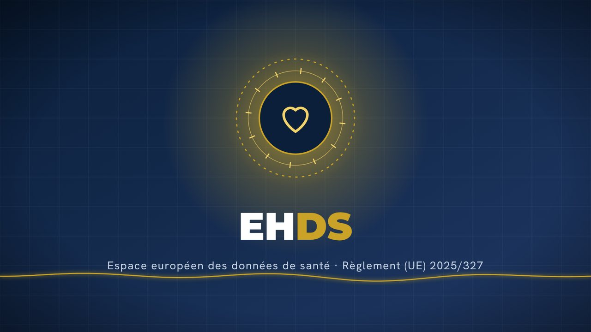

ARG
ARGARGOS › La réglementation en 4 minutes › EHDS
EHDS en 4 minutes: Pour les hôpitaux et les fabricants
L'EHDS est le premier espace commun de données sectoriel de l'Union. De données enfermées à des données qui voyagent avec le patient. Pour les hôpitaux et les fabricants, beaucoup change.

- 0:00Urgences
- 0:13Le règlement
- 0:28Ce qui change
- 0:50EHDS
- 0:58Fonctionnement
- 1:27Données prioritaires
- 1:43Calendrier
- 2:00Droits
- 2:14Au niveau national
- 2:32Que faire
Points clés
- 105 articles · en vigueur depuis le 26 mars 2025
- 26.3.2027 application générale
- 2029 premier groupe de données et début de l'usage secondaire
- 2031 second groupe de données
- 2035 dernières phases
- Accès immédiat Le patient voit ses données
- Marquage CE Le dossier médical, produit réglementé
- Format européen Échange standardisé
Transcription
Texte complet de la voix off
0:00 · Urgences
Une patiente arrive aux urgences à l'étranger. Son dossier est resté chez elle. Ses examens, dans un autre système. Ses traitements, sur papier. Et le médecin décide à l'aveugle.
0:13 · Le règlement
L'espace européen des données de santé veut y mettre fin. Un règlement de 105 articles, en vigueur depuis mars 2025. Il donne à chacun le contrôle de ses données de santé, et rend les dossiers interopérables. Les amendes atteignent vingt millions d'euros.
0:28 · Ce qui change
Pour les hôpitaux et les fabricants, beaucoup change. Le patient voit ses données tout de suite, et qui y a accédé. Les logiciels de dossier médical deviennent un produit marqué CE. Les échanges se font dans un format européen commun. La réutilisation, seulement avec autorisation. Et chaque accès est journalisé.
0:50 · EHDS
L'EHDS est le premier espace commun de données sectoriel de l'Union. De données enfermées à des données qui voyagent avec le patient.
0:58 · Fonctionnement
Comment il fonctionne. Utilisation primaire : le patient consulte, complète, restreint et partage ses données, y compris à l'étranger. Produit réglementé : interopérabilité et journal des accès, avec marquage CE. Utilisation secondaire : des organismes d'accès autorisent la recherche et l'IA. Dans des environnements sécurisés, avec des données anonymisées. Et jamais pour discriminer ou réidentifier quelqu'un.
1:27 · Données prioritaires
Les données prioritaires arrivent en deux groupes. D'abord le dossier patient résumé, la prescription et la dispensation électroniques. Ensuite l'imagerie et la biologie, et les comptes rendus de sortie. Le tout dans le format européen d'échange.
1:43 · Calendrier
Le calendrier est long, mais il a commencé. 26 mars 2027 : application générale. 2029 : le premier groupe de données et le début de l'utilisation secondaire. 2031 : le second groupe. Et 2035 : les dernières phases.
2:00 · Droits
Le patient gagne des droits. Un accès immédiat et gratuit. Compléter et demander une rectification. Emporter ses données, même à l'étranger. Décider qui voit quoi. Et savoir qui a consulté, et quand.
2:14 · Au niveau national
En Belgique, la Health Data Agency est opérationnelle depuis janvier 2024. L'organisme d'accès aux données de santé existe donc déjà. Elle réunira l'autorité de santé numérique et l'organisme d'accès. Et l'EHDS harmonisera ces règles à l'échelle européenne.
2:32 · Que faire
Que faire maintenant. Inventorier les systèmes, préparer l'interopérabilité, ordonner les données. ARGOS vérifie l'EHDS et le RGPD en même temps, avec des tests actifs sur les systèmes réels, sans que les données quittent l'hôpital. EHDS : la donnée de santé au service du patient.
Questions fréquentes
Qu’est-ce que EHDS ?
L'EHDS est le premier espace commun de données sectoriel de l'Union. De données enfermées à des données qui voyagent avec le patient. L'espace européen des données de santé veut y mettre fin. Un règlement de 105 articles, en vigueur depuis mars 2025. Il donne à chacun le contrôle de ses données de santé, et rend les dossiers interopérables. Les amendes atteignent vingt millions d'euros.
Qu’exige EHDS ?
Comment il fonctionne. Utilisation primaire : le patient consulte, complète, restreint et partage ses données, y compris à l'étranger. Produit réglementé : interopérabilité et journal des accès, avec marquage CE. Utilisation secondaire : des organismes d'accès autorisent la recherche et l'IA. Dans des environnements sécurisés, avec des données anonymisées. Et jamais pour discriminer ou réidentifier quelqu'un.
Quelles sont les dates clés ?
Le calendrier est long, mais il a commencé. 26 mars 2027 : application générale. 2029 : le premier groupe de données et le début de l'utilisation secondaire. 2031 : le second groupe. Et 2035 : les dernières phases.
Quelle est la situation en Belgique ?
Pour les hôpitaux et les fabricants, beaucoup change. Le patient voit ses données tout de suite, et qui y a accédé. Les logiciels de dossier médical deviennent un produit marqué CE. Les échanges se font dans un format européen commun. La réutilisation, seulement avec autorisation. Et chaque accès est journalisé. En Belgique, la Health Data Agency est opérationnelle depuis janvier 2024. L'organisme d'accès aux données de santé existe donc déjà. Elle réunira l'autorité de santé numérique et l'organisme d'accès. Et l'EHDS harmonisera ces règles à l'échelle européenne.
Que doit faire une entreprise dès maintenant ?
Que faire maintenant. Inventorier les systèmes, préparer l'interopérabilité, ordonner les données. ARGOS vérifie l'EHDS et le RGPD en même temps, avec des tests actifs sur les systèmes réels, sans que les données quittent l'hôpital. EHDS : la donnée de santé au service du patient.
Sources officielles
À voir aussi
 Règlement sur l'IA
Règlement sur l'IARèglement sur l'IA en 4 minutes: Belgique : application directe, loi en attente
 NIS2
NIS2NIS2 en 4 minutes: Belgique : le bon élève
 Data Act et DGA
Data Act et DGAData Act et DGA en 4 minutes: Belgique : l'autorité se prépare
Voix et musique générées par intelligence artificielle (art. 50 du règlement sur l’IA). Information générale, pas un conseil juridique ; situation à novembre 2026, d’après les fiches réglementaires de Software in a Box. Clips vidéo sous licence Envato.
Pour intégrer cette présentation sur un autre site : <iframe src="https://argos.softwareinabox.eu/fr-be/reglementation/ehds/presentacion/?embed=1" width="960" height="540" allow="autoplay; fullscreen" title="EHDS en 4 minutes: Pour les hôpitaux et les fabricants"></iframe> avec un lien vers cette page.
Aussi disponible en: EspañolDeutschFrançaisItalianoNederlandsNederlands (België)PortuguêsDansk